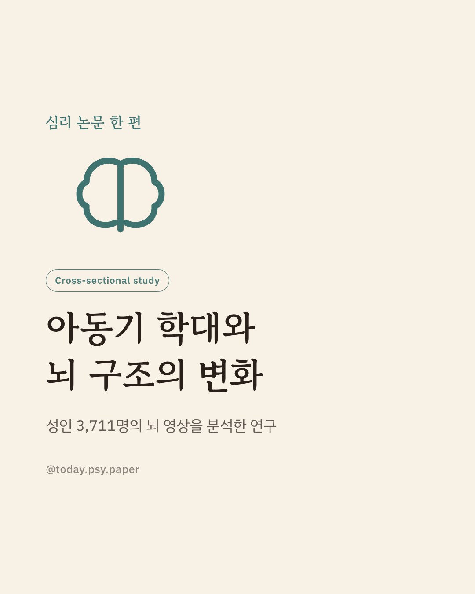
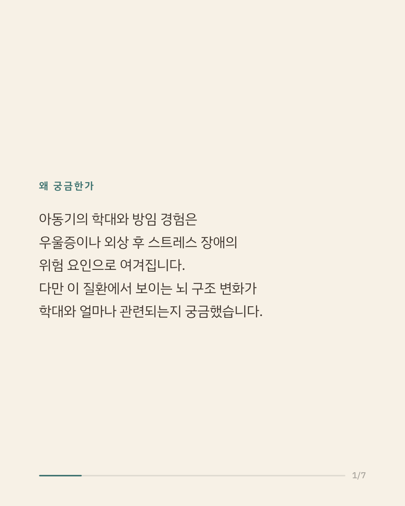
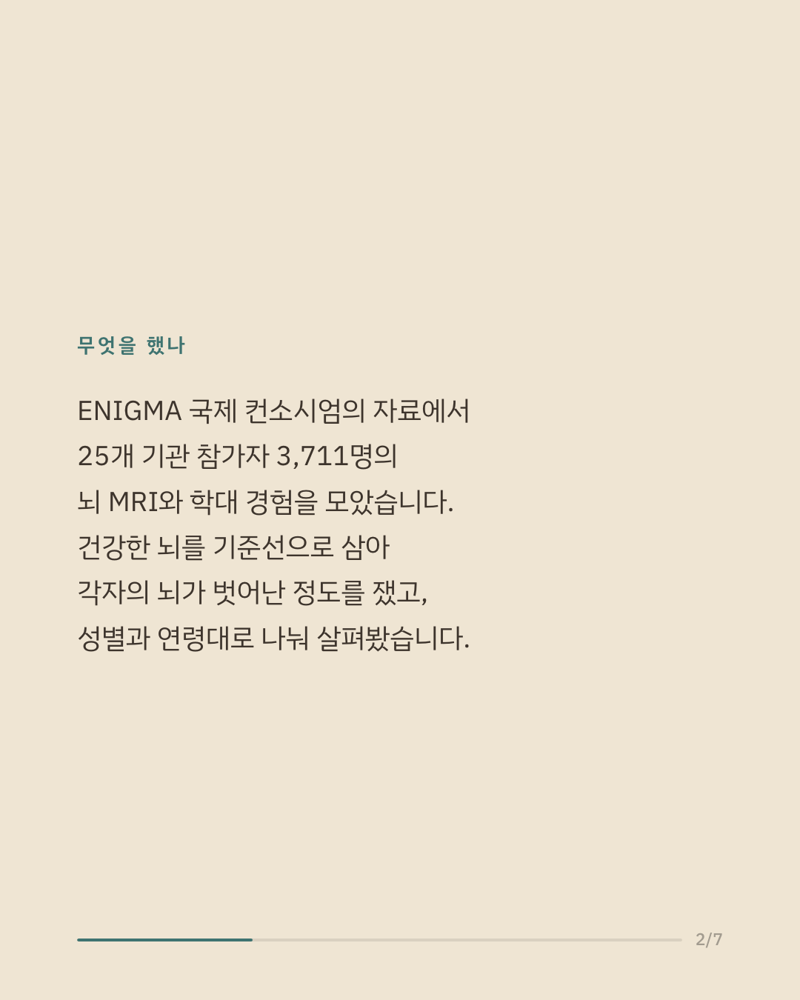
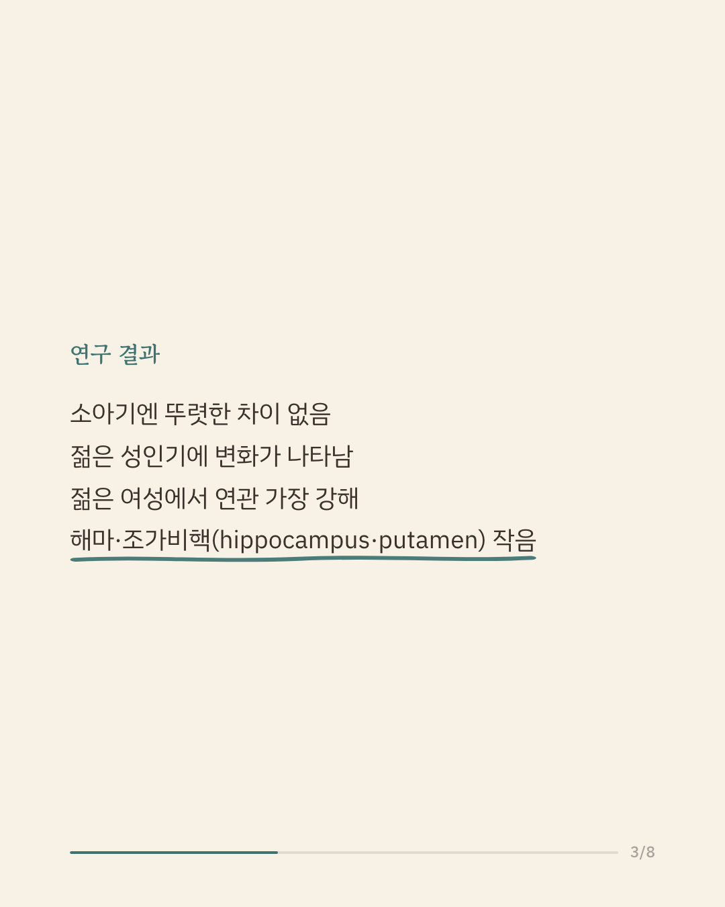
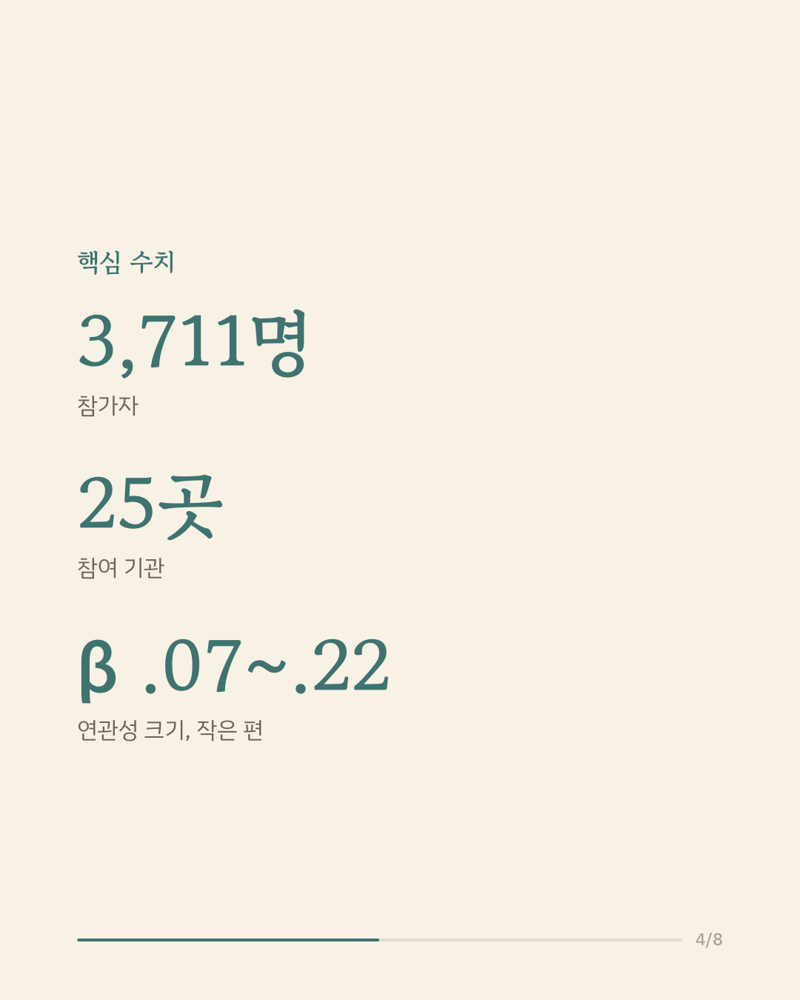
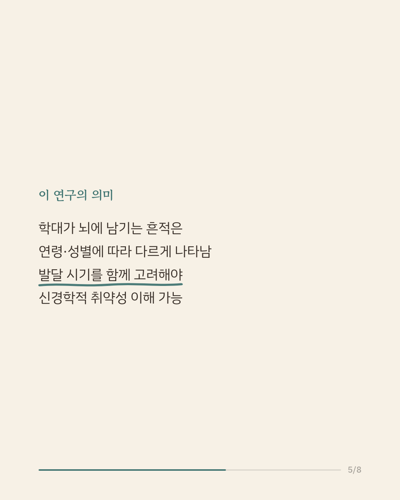
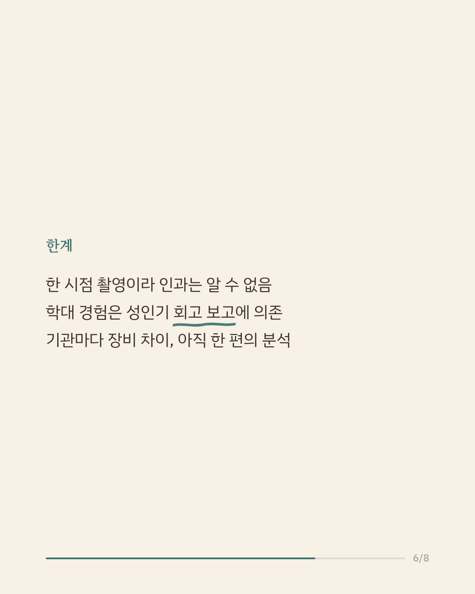
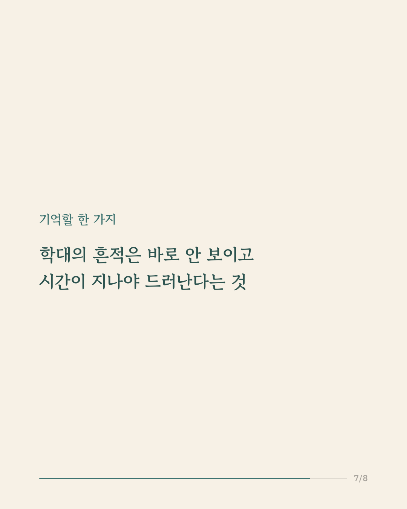
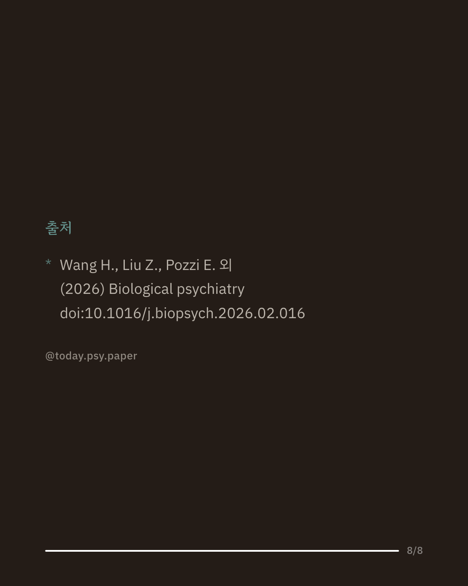

아동기의 학대와 방임은 성인기의 우울증과 외상 후 스트레스 장애 위험을 높이는 것으로 알려져 있습니다. 다만 이 두 질환에서 관찰되는 뇌 구조의 변화가 실제로 아동기 학대에서 비롯된 것인지는 분명하지 않았습니다. 연구진은 ENIGMA 컨소시엄의 우울증·PTSD 연구 그룹에 참여한 25개 기관, 3,711명(평균 33.3세, 59.9% 여성)의 뇌 MRI 자료를 규범 모델링으로 분석해 뇌 부피, 피질 두께, 표면적의 편차 점수를 구하고, 성별과 연령대(소아, 젊은 성인, 노년 성인)로 나누어 학대와의 연관성을 살펴보았습니다. 18세 이하 참가자에서는 유의한 차이가 나타나지 않았습니다. 반면 18~35세 젊은 성인에서는 학대가 시상과 담창구의 부피 증가, 일부 전두·대상 영역의 두께 변화와 관련이 있었고, 특히 젊은 여성에서 연관이 가장 뚜렷해 학대와 방임 경험이 많을수록 해마와 조가비핵의 부피가 작고 내후각 피질이 얇았으며 그 크기는 대체로 작은 수준(|β| 0.07~0.22)이었습니다. 연구진은 학대가 뇌에 남기는 영향이 발달 시기와 성별에 따라 다르게 나타난다는 점을 보여준다고 설명합니다. 다만 뇌 영상이 한 시점에 촬영된 단면 자료여서 학대와 뇌 변화의 선후 관계를 알기 어렵고, 학대 정보도 후향적 자기보고에 의존하며, 여러 기관의 자료를 합친 만큼 표본마다 질의 차이가 있습니다. 단일 연구이므로 확대 해석은 조심해야 합니다. 출처: Biological Psychiatry(2026), ENIGMA MDD·PTSD Working Groups. #임상심리 #정신건강정보 #심리학연구 #아동학대 #뇌영상연구
python3 publish.py 41791639